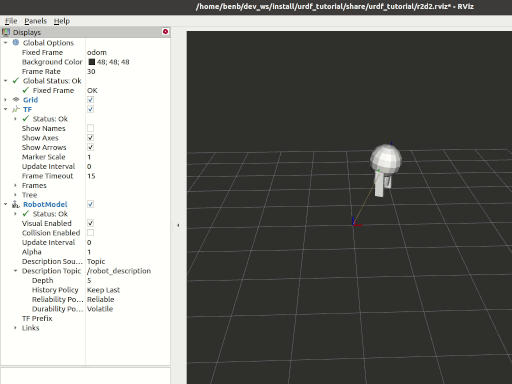

**目标：**模拟使用URDF建模的行走机器人，并在Rviz中查看。
教程级别： 中级
时间： 15分钟
本教程将向您展示如何建模行走机器人，将其状态发布为 tf2 消息，并在Rviz中进行仿真查看。首先，我们创建描述机器人装配的URDF模型。接下来，我们编写一个节点来模拟运动并发布JointState和变换。然后，我们使用``robot_state_publisher``将整个机器人状态发布到``/tf2``。
如往常一样，在每次打开新的终端时不要忘记在 :doc`每个新终端中启用ROS 2环境 <../../Beginner-CLI-Tools/Configuring-ROS2-Environment>`。
mkdir -p ~/second_ros2_ws/src # change as needed
cd ~/second_ros2_ws/src
ros2 pkg create urdf_tutorial_r2d2 --build-type ament_python --dependencies rclpy
cd urdf_tutorial_r2d2
您现在应该看到一个``urdf_tutorial_r2d2``文件夹。接下来，您将对其进行几处更改。
创建存储某些资源的目录：
mkdir -p urdf
下载:download:URDF文件，并将其保存为``~/second_ros2_ws/src/urdf_tutorial_r2d2/urdf/r2d2.urdf.xml``。下载:download:Rviz配置文件，并将其保存为``~/second_ros2_ws/src/urdf_tutorial_r2d2/urdf/r2d2.rviz``。
现在我们需要一种方法来指定机器人所处的状态。为此，我们必须指定所有三个关节和整体里程计。
启动您喜欢的编辑器，并将以下代码粘贴到``~/second_ros2_ws/src/urdf_tutorial_r2d2/urdf_tutorial_r2d2/state_publisher.py``中
from math import sin, cos, pi
import rclpy
from rclpy.node import Node
from rclpy.qos import QoSProfile
from geometry_msgs.msg import Quaternion
from sensor_msgs.msg import JointState
from tf2_ros import TransformBroadcaster, TransformStamped
class StatePublisher(Node):
def __init__(self):
rclpy.init()
super().__init__('state_publisher')
qos_profile = QoSProfile(depth=10)
self.joint_pub = self.create_publisher(JointState, 'joint_states', qos_profile)
self.broadcaster = TransformBroadcaster(self, qos=qos_profile)
self.nodeName = self.get_name()
self.get_logger().info("{0} started".format(self.nodeName))
degree = pi / 180.0
loop_rate = self.create_rate(30)
# robot state
tilt = 0.
tinc = degree
swivel = 0.
angle = 0.
height = 0.
hinc = 0.005
# message declarations
odom_trans = TransformStamped()
odom_trans.header.frame_id = 'odom'
odom_trans.child_frame_id = 'axis'
joint_state = JointState()
try:
while rclpy.ok():
rclpy.spin_once(self)
# update joint_state
now = self.get_clock().now()
joint_state.header.stamp = now.to_msg()
joint_state.name = ['swivel', 'tilt', 'periscope']
joint_state.position = [swivel, tilt, height]
# update transform
# (moving in a circle with radius=2)
odom_trans.header.stamp = now.to_msg()
odom_trans.transform.translation.x = cos(angle)*2
odom_trans.transform.translation.y = sin(angle)*2
odom_trans.transform.translation.z = 0.7
odom_trans.transform.rotation = \
euler_to_quaternion(0, 0, angle + pi/2) # roll,pitch,yaw
# send the joint state and transform
self.joint_pub.publish(joint_state)
self.broadcaster.sendTransform(odom_trans)
# Create new robot state
tilt += tinc
if tilt < -0.5 or tilt > 0.0:
tinc *= -1
height += hinc
if height > 0.2 or height < 0.0:
hinc *= -1
swivel += degree
angle += degree/4
# This will adjust as needed per iteration
loop_rate.sleep()
except KeyboardInterrupt:
pass
def euler_to_quaternion(roll, pitch, yaw):
qx = sin(roll/2) * cos(pitch/2) * cos(yaw/2) - cos(roll/2) * sin(pitch/2) * sin(yaw/2)
qy = cos(roll/2) * sin(pitch/2) * cos(yaw/2) + sin(roll/2) * cos(pitch/2) * sin(yaw/2)
qz = cos(roll/2) * cos(pitch/2) * sin(yaw/2) - sin(roll/2) * sin(pitch/2) * cos(yaw/2)
qw = cos(roll/2) * cos(pitch/2) * cos(yaw/2) + sin(roll/2) * sin(pitch/2) * sin(yaw/2)
return Quaternion(x=qx, y=qy, z=qz, w=qw)
def main():
node = StatePublisher()
if __name__ == '__main__':
main()
创建一个新的``~/second_ros2_ws/src/urdf_tutorial_r2d2/launch``文件夹。打开您的编辑器并将以下代码粘贴到其中，保存为``~/second_ros2_ws/src/urdf_tutorial_r2d2/launch/demo.launch.py``
import os
from ament_index_python.packages import get_package_share_directory
from launch import LaunchDescription
from launch.actions import DeclareLaunchArgument
from launch.substitutions import LaunchConfiguration
from launch_ros.actions import Node
def generate_launch_description():
use_sim_time = LaunchConfiguration('use_sim_time', default='false')
urdf_file_name = 'r2d2.urdf.xml'
urdf = os.path.join(
get_package_share_directory('urdf_tutorial_r2d2'),
urdf_file_name)
with open(urdf, 'r') as infp:
robot_desc = infp.read()
return LaunchDescription([
DeclareLaunchArgument(
'use_sim_time',
default_value='false',
description='Use simulation (Gazebo) clock if true'),
Node(
package='robot_state_publisher',
executable='robot_state_publisher',
name='robot_state_publisher',
output='screen',
parameters=[{'use_sim_time': use_sim_time, 'robot_description': robot_desc}],
arguments=[urdf]),
Node(
package='urdf_tutorial_r2d2',
executable='state_publisher',
name='state_publisher',
output='screen'),
])
您必须告诉**colcon**构建工具如何安装您的Python包。请按照以下方式编辑``~/second_ros2_ws/src/urdf_tutorial_r2d2/setup.py``文件：
包括以下导入语句
import os
from glob import glob
from setuptools import setup
from setuptools import find_packages
在 data_files 中添加这两行
data_files=[
...
(os.path.join('share', package_name, 'launch'), glob(os.path.join('launch', '*launch.[pxy][yma]*'))),
(os.path.join('share', package_name), glob('urdf/*'))
],
修改 entry_points 表，以便稍后可以从控制台运行 'state_publisher'
'console_scripts': [
'state_publisher = urdf_tutorial_r2d2.state_publisher:main'
],
保存修改后的 setup.py 文件